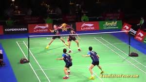

BADMINTON

Badminton is a racquet sport played using racquets to hit a shuttlecock across a net. Although it may be played with larger teams, the most common forms of the game are "singles" (with one player per side) and "doubles" (with two players per side). Badminton is often played as a casual outdoor activity in a yard or on a beach; formal games are played on a rectangular indoor court. Points are scored by striking the shuttlecock with the racquet and landing it within the opposing side's half of the court.
Each side may only strike the shuttlecock once before it passes over the net. Play ends once the shuttlecock has struck the floor or if a fault has been called by the umpire, service judge, or (in their absence) the opposing side.[1]
The shuttlecock is a feathered or (in informal matches) plastic projectile which flies differently from the balls used in many other sports. In particular, the feathers create much higher drag, causing the shuttlecock to decelerate more rapidly. Shuttlecocks also have a high top speed compared to the balls in other racquet sports. The flight of the shuttlecock gives the sport its distinctive nature.